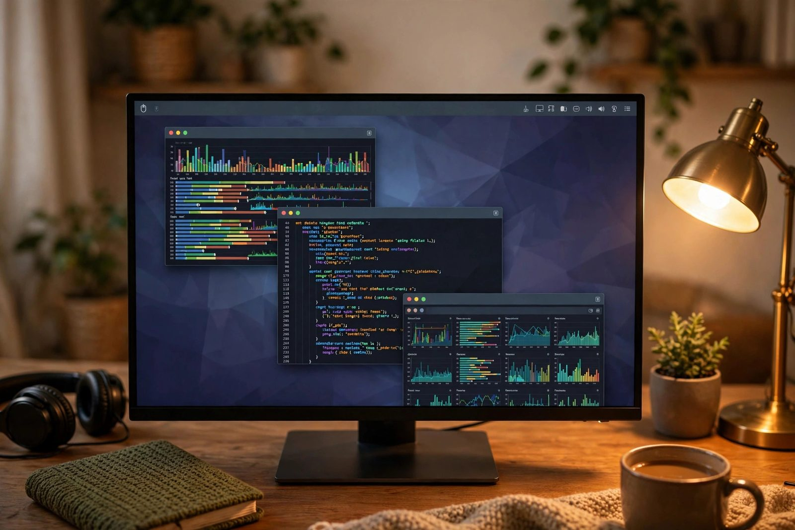

Arch Linux Remote Desktop via WSL2
Full XFCE desktop through WSL2 without router changes

Overview
This project is a complete guide and automation script set for running a full Arch Linux with XFCE4 graphical desktop inside WSL2 on Windows 11, accessible remotely via RDP from any device, without modifying router settings or opening any firewall ports. This is the key differentiator: instead of port-forwarding RDP (port 3389) through the router (which is often impossible on restricted networks, dorms, or corporate environments), the RDP traffic is tunneled outward through Cloudflare Tunnel.
The architecture works by running xrdp inside the WSL2 Arch Linux environment
on the standard RDP port, then running a cloudflared tunnel daemon that creates
an encrypted outbound connection to Cloudflare's edge network. On the client side,
cloudflared access rdp authenticates through Cloudflare Access and opens a local
listener; any standard RDP client then connects to localhost:3389, and the traffic
is routed through the tunnel to xrdp. No inbound ports, no static IP required, no router access
needed.
Architecture
Tech Stack
- Arch Linux, rolling-release Linux distribution running inside WSL2
- WSL2, Windows Subsystem for Linux 2, Hyper-V-based VM layer in Windows 11
- XFCE4, lightweight GTK desktop environment for the graphical session
- xrdp + xorgxrdp, open-source RDP server for Linux, compiled from AUR
- Cloudflare Tunnel (cloudflared), outbound tunnel daemon, eliminates need for port forwarding
- Windows 11, host OS with WSL2 and Hyper-V enabled
- pacman / yay, Arch package manager and AUR helper
Build Process
Install Arch Linux in WSL2
Arch Linux is available as an official WSL distribution, so it installs directly with
wsl --install. After installation, launch the distribution, refresh the
package databases, and create a non-root user with sudo access via a validated
/etc/sudoers.d/ drop-in file (never append directly to
/etc/sudoers).
# In PowerShell (as Administrator):
# Update WSL, then install Arch from the official feed
wsl --update
wsl --install archlinux
# Launch Arch
wsl -d archlinux
# Inside Arch:
pacman-key --init
pacman-key --populate archlinux
pacman -Syu --noconfirm
# Create user with a validated sudoers drop-in
useradd -m -G wheel -s /bin/bash yourusername
passwd yourusername
echo "%wheel ALL=(ALL:ALL) ALL" | sudo tee /etc/sudoers.d/wheel
sudo chmod 440 /etc/sudoers.d/wheel
sudo visudo -cInstall XFCE4 Desktop Environment
XFCE4 and its additional utilities are installed via pacman. The
xfce4-goodies meta-package includes terminal, file manager,
panel plugins, and screensaver. Fonts and the GTK theme are also installed
for a complete desktop experience over RDP.
pacman -S xfce4 xfce4-goodies \
xorg-server xorg-xinit \
ttf-dejavu ttf-liberation \
gtk3 adwaita-icon-theme \
dbus --noconfirm
# Verify XFCE components are installed
pacman -Qs xfce4 | grep "local/"Install xrdp and xorgxrdp from AUR
xrdp is the RDP server and xorgxrdp provides the
Xorg video driver module that xrdp uses for the remote session display.
Both are installed from the AUR (Arch User Repository), not the official
repositories, and must be compiled from source. The yay AUR helper
is installed first.
# Install yay AUR helper (run as non-root user)
pacman -S git base-devel --noconfirm
git clone https://aur.archlinux.org/yay.git /tmp/yay
cd /tmp/yay && makepkg -si --noconfirm
# Install xrdp and xorgxrdp from AUR
yay -S xrdp xorgxrdp --noconfirm
# These packages compile from source - takes a few minutes on a modern CPU
# Verify installation
xrdp --versionConfigure .xsession for XFCE4
When xrdp starts a session, it reads ~/.xsession to know which
desktop environment to launch. Without this file, xrdp launches a blank session
or fails with a black screen. The file must be executable and contain the correct
start command.
# Create the .xsession file for your user
echo "startxfce4" > ~/.xsession
chmod +x ~/.xsession
# Also create a system-wide fallback
sudo bash -c 'echo "startxfce4" > /etc/xrdp/startwm.sh'
sudo chmod +x /etc/xrdp/startwm.sh
# Verify the file content and permissions
cat ~/.xsession
ls -la ~/.xsessionEnable systemd and Start xrdp
WSL2 does not run systemd by default. It must be enabled in
/etc/wsl.conf so that systemctl works. After enabling
systemd and restarting the WSL2 instance, xrdp is enabled and started as a
systemd service.
# /etc/wsl.conf
[boot]
systemd=true
# Save the file, then restart WSL2 from PowerShell:
# wsl -shutdown
# wsl -d Arch
# Back inside Arch, start xrdp
sudo systemctl enable xrdp xrdp-sesman
sudo systemctl start xrdp xrdp-sesman
sudo systemctl status xrdp
# Confirm xrdp is listening on port 3389
ss -tlnp | grep 3389Install cloudflared and Create Tunnel
The cloudflared daemon is installed and authenticated with a
Cloudflare account. A named tunnel is created for the RDP service, a DNS hostname is
routed to it, and the tunnel config maps that hostname to
rdp://localhost:3389 inside the WSL2 VM, ending with the required
http_status:404 catchall. WSL2 uses NAT networking by default, so xrdp's port
is not reachable from the LAN anyway; the outbound tunnel solves remote access and NAT
traversal in one move. RDP over a tunnel also requires a Cloudflare
Access application for the hostname with a policy allowing your identity; the client
authenticates through Access when it connects.
# Install cloudflared (AUR)
yay -S cloudflared --noconfirm
# Authenticate with Cloudflare (opens browser)
cloudflared tunnel login
# Create a named tunnel
cloudflared tunnel create rdp-tunnel
# Route a DNS hostname to the tunnel (use your own domain)
cloudflared tunnel route dns rdp-tunnel rdp.example.com
# Create tunnel config (the final rule is a mandatory catchall)
mkdir -p ~/.cloudflared
cat > ~/.cloudflared/config.yml << 'EOF'
tunnel: rdp-tunnel
credentials-file: /home/yourusername/.cloudflared/<TUNNEL-ID>.json
ingress:
- hostname: rdp.example.com
service: rdp://localhost:3389
- service: http_status:404
EOF
# Start the tunnel
cloudflared tunnel --config ~/.cloudflared/config.yml run rdp-tunnel
# Or run as systemd service
cloudflared service install
systemctl enable cloudflared
systemctl start cloudflared
# In the Cloudflare Zero Trust dashboard, create an Access application for
# rdp.example.com with a policy allowing your identity.Connect via cloudflared access on the client
An RDP client cannot talk to the tunnel hostname directly. Install
cloudflared on the client machine and run
cloudflared access rdp: it authenticates through Cloudflare Access
(a browser window opens on first connect) and opens a local listener. Point any
ordinary RDP client at localhost:3389.
# On the client machine (cloudflared installed):
cloudflared access rdp --hostname rdp.example.com --url rdp://localhost:3389
# Then connect your ordinary RDP client to localhost:3389:
# Windows: mstsc -> Computer: localhost:3389, Username: yourusername
# macOS: Microsoft Remote Desktop -> Add PC -> PC name: localhost:3389
# Linux: xfreerdp /v:localhost:3389 /u:yourusername /dynamic-resolutionRequest Flow
Challenges & Solutions
-
xrdp black screen on connect: The most common issue with xrdp on Linux is
connecting successfully but seeing only a black screen. This is caused by the
~/.xsessionfile being absent, empty, or not executable. Resolved by creating the file withecho "startxfce4" > ~/.xsession && chmod +x ~/.xsessionand ensuring the file belongs to the correct user account. -
systemd not available in WSL2 by default: Before enabling systemd,
systemctlcommands returned errors and xrdp could not be managed as a service. Resolved by adding[boot] systemd=trueto/etc/wsl.confand runningwsl -shutdownfrom PowerShell to restart the WSL2 instance with systemd as PID 1. -
xorgxrdp AUR compilation failures: Building xorgxrdp from the AUR required
specific Xorg development headers that were not pulled in automatically. Resolved by
installing
xorg-server-develandxorgprotobefore running the AUR build, and ensuringbase-develwas fully installed. -
Cloudflare Tunnel not reconnecting after WSL2 restart: The cloudflared
process terminated when WSL2 was shut down and did not restart automatically. Resolved by
running
cloudflared service installto register it as a systemd service, which then starts automatically when WSL2 boots with systemd enabled.
What I Learned
- WSL2 internals: Hyper-V-based VM, network bridge, and the role of
wsl.conf - xrdp session lifecycle:
xsessionfile, display allocation, and xorgxrdp module loading - Cloudflare Tunnel architecture: outbound-only tunnels, credential files, and ingress routing
- AUR package compilation: makepkg, PKGBUILD review, and dependency resolution
- systemd in WSL2: enabling it, service unit management, and boot sequence changes
- Remote desktop protocol fundamentals: session negotiation, display encoding, and input forwarding
How I built it
The build started from a simple constraint: I wanted a full Linux desktop I could reach from anywhere, even from networks where port forwarding is impossible. That ruled out exposing RDP directly and pushed the design toward an outbound tunnel.
- Phase 1, install Arch inside WSL2: Installed Arch with
wsl --install archlinuxfrom the official WSL feed, initialized the pacman keyring, ran a full system upgrade, and created a non-root user with a validated sudoers drop-in. - Phase 2, install the XFCE4 desktop: Installed XFCE4 as the desktop environment for its low memory footprint, which matters inside a virtualized WSL2 guest.
- Phase 3, compile the RDP server from AUR: Installed
xrdpandxorgxrdpwith the yay AUR helper, then configured the session startup so RDP logins launch the XFCE session. - Phase 4, tunnel RDP through Cloudflare: Ran
cloudflaredso the RDP traffic flows out through a Cloudflare Tunnel. No router changes and no open firewall ports are needed, which is what makes this work on dorm, corporate, and restricted networks. - Phase 5, automate everything: Packaged the whole sequence into scripts so the setup is repeatable: one import, one desktop install, one RDP compile, one tunnel command.
What you need
| Category | Item | Notes |
|---|---|---|
| Hardware | Windows 11 PC with virtualization enabled | WSL2 requires Hyper-V support in the CPU and BIOS |
| Software | WSL2 with Arch installed via wsl --install archlinux | Official WSL distribution feed; manual tarball import is an alternative path |
| Software | XFCE4, xrdp, xorgxrdp (via yay from AUR) | xrdp is not in the official Arch repos; AUR compile takes a few minutes |
| Accounts | Cloudflare account with a domain | Needed to route the tunnel hostname |
| Skills | Basic Linux admin and PowerShell | Importing distros, editing service configs, reading logs |
Challenges and lessons learned
- Compiling xrdp from source: the AUR build pulls in Xorg development headers, so a minimal Arch install needs the base-devel group first. Lesson: script the dependency install before the AUR step, or the build fails halfway.
- Session startup wiring: getting xrdp to hand off to XFCE instead of a bare X session took several tries editing the session scripts. Lesson: test the RDP login after every config change rather than batching edits.
- Tunnel versus direct RDP: tunneling adds a small latency hop, but the tradeoff is worth it when port forwarding is not an option. Lesson: pick the architecture that fits the network you actually have, not the ideal one.
What is next
- Add an optional GPU-accelerated path using xorgxrdp-glamor for smoother rendering on capable hosts.
- Package the scripts into a single one-command installer with sanity checks for each stage.
- Evaluate Tailscale as an alternative transport for networks where Cloudflare Tunnel is blocked.
- Document a Wayland-based variant as Wayland session support in RDP servers matures.